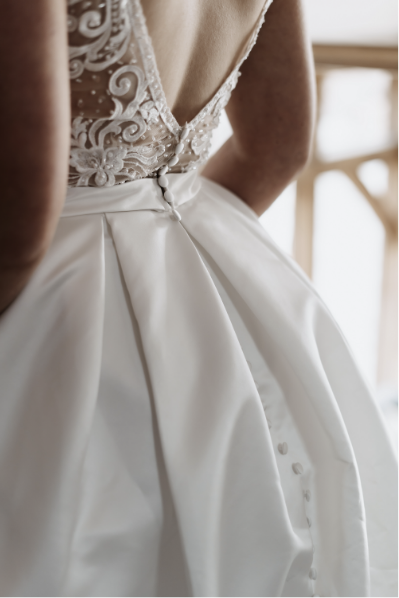
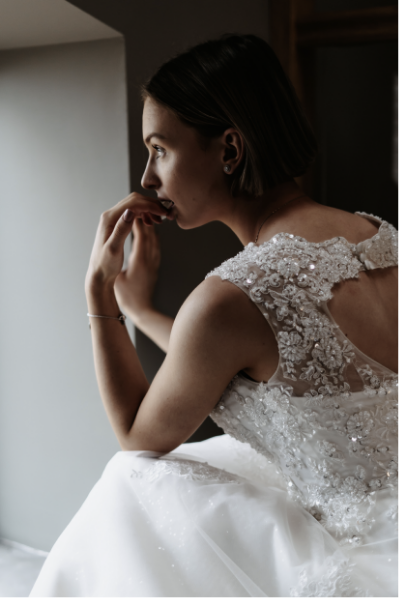
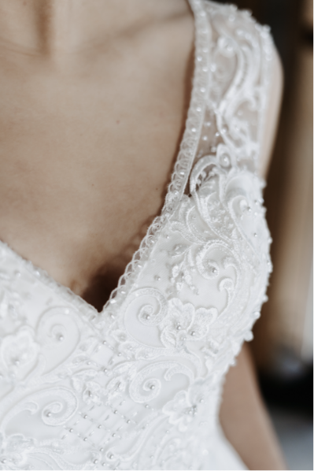

The Design Room DRESSES DESIGNED IN-HOUSE BY OUR CREATIVE TEAM
Our in-house designers are constantly working to give Elite Brides more beautiful choice of designs.
The first sketch and sample of every gown we sell is lovingly created in the Design Room at our head office in Yorkshire – based on the styles that
are hitting catwalks around the world, but designing quality dresses for real brides and all figures.
  
BEHIND THE SCENES
Watch our short video to see the making of one of our wedding dresses!
Follow us on social media and keep up to date with the latest Bridal Gallery news and
updates from behind the scenes.
CUSTOM ALTERATIONS
As all our gowns are designed by our own team right here in Yorkshire, we are able to offer a unique in-house alterations service to all our brides.
Not only will we make sure your gown fits you like a glove, we also offer a wide range of custom alterations to make sure the dress you choose is
your dream dress – even if it wasn’t quite there for you on the hanger.
If you decide to have your alterations with us, you’ll be seen by an amazing seamstress who knows every single one of our styles inside and out.
Your alterations may even be performed by the designer who created your dress! So there really is no-one better to make your dress.
Add straps or sleeves, change a neckline or the length of a train… or request your dress in a different colour! If there’s something we can do to
make your gown more perfect for you, just ask our bridal advisors during your appointment. Our amazing design team will be more than happy to
discuss this with you!